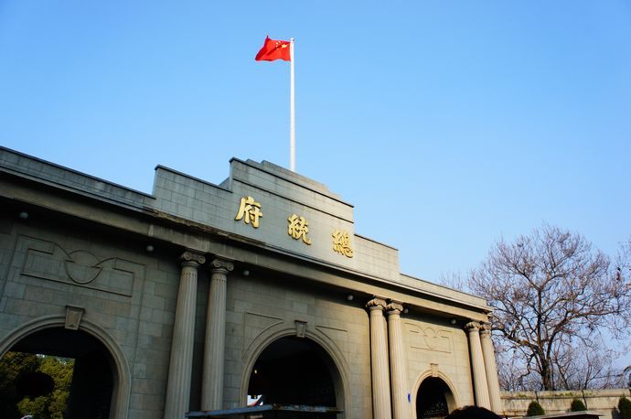
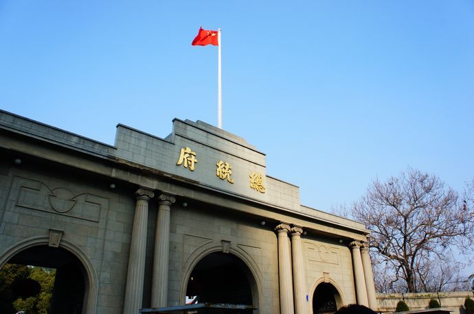

走在南京的街道上，看着过往行色匆匆的人，可以感觉到这座城市蓬勃发展的生机。作为外乡来的大学生，一个散发着无限活力的城市拥有着无与伦比的魅力，这里充满着实现梦想的可能性。
南京印象
一群人，怀着期待，来到这里

首页

前言

溯源

感想

景点
美食

南京印象
南京印象
一群人，怀着期待，来到这里
前言
作为二零一八年来到南京的新的一批大学生，在经历了一段时间的大学生活，慢慢熟悉了南京的生活方式后，总是会有一些属于自己的感受和经历想要分享出来。那些快乐的瞬间，那些感动的瞬间，都是由这座城市的人和物带来的，都是这座城市带给我们的惊喜。在这里，将会将我们几个月对南京的了解，在南京的经历，以及那些复杂的感受给分享出来。这些都是我们的南京印象！
溯源
三国-霸业与稳定
公元212年，三国时期的吴主孙权在金陵邑故址，利用西麓的天然石壁做基础修筑了石头城。石头城临江控淮，恃要凭险，可以贮藏兵械和粮饷。因此，它是东吴水军江防要塞和城防据点。石头城周长6里左右。公元229年孙权在此建都,始创建业城,这是南京作为都城的正式开始，至今已有1700余年。 当年建业城的内外，人工运河与自然江河纵横相接，三吴地区（吴郡、吴兴和会稽）丰富的物资，可以通过江南水网直接运抵都城内的仓城。石头城下的长江码头经常停泊有数以千计的船舰，曾经远航至台湾、海南岛和朝鲜半岛等地，并与日本及南海诸岛有着密切的文化往来
明代 -名由与繁荣
公元1368年朱元璋登上皇帝宝座，国号大明，下令以应天府为“南京” ，南京的名称就是从这个时候开始。南京在明朝时期，尤其是明初的53年间，经济、文化发展很快，成为全国最大的城市。当时城内有100多个工商行业，其中与丝织业有关的达20多个，官营的丝织业以织造高级的锦缎、素缎和绫、罗、纱、绢为主，尤以织金锦和金银线织成的彩色妆花缎最为精工，单是织绵工匠集中的地点就有3个坊。明代南京的建筑业和造船业是两项规模巨大的官营手工业。明代南京的雕版印刷业亦闻名全国。
天国-动乱与改变
1853年3月，广西桂平县金田村起义的太平军进抵南京城。天王洪秀全直接至两江总督署，不久即就此改建为“天朝宫殿”（1853－1864年）太平天国建都天京期间，曾经在此颁布了以废除封建土地制度为核心的“天朝田亩制度”，推行了耕者有其田的政策。在太平军内部实行平均分配的“圣库”制度，并设立诸匠营和百工衙等统一管理各种手工业的机构，还实行了解放妇女和逐步开放商业的政策。
民国-革命与终结
1911年10月10日爆发的辛亥革命，一举推翻了清王朝，埋葬了封建帝制。同年12月，宣布起义的17省代表在南京集会，宣布改国号为中华民国，以公元1912年为中华民国元年，以南京为临时首都，并选举孙中山先生为临时大总统。孙中山先生于1912年元旦从上海乘专车来南京就职，临时大总统府就设在清代的两江总督署内，今遗址犹存。其后，在经过了十余年的军阀统治以后，1927年至1949年期间，中华民国政府又再度建都于南京。
新中国-解放与发展
辽沈、平津、淮海三大战役以后，国民党的精锐主力部队几乎丧失殆尽。1949年元旦，蒋介石在美帝国主义者的授意下为了争取喘息时间又在南京玩弄假和平阴谋，发表了一个“引退求和”声明。4月1日，国民党政府和谈代表团飞赴北平，4月20日北平和谈破裂，4月21日，毛泽东和朱德发出了《向全国进军的命令》。我百万雄师，在千里长江分三路渡江作战。4月23日深夜，人民解放军渡过长江，4月24日晨解放军先遣部队直奔“总统府”，把胜利的红旗插上了蒋介石“总统府”的门楼上。从此，南京这座世界闻名的文化古城获得了新生，永远归入人民的怀抱。捷报传到北平，毛泽东写下了具有伟大历史意义的《人民解放军占领南京》的不朽诗篇； 钟山风雨起苍黄，百万雄师过大江。
感想
走在南京的街道上，看着过往行色匆匆的人，可以感觉到这座城市蓬勃发展的生机。作为外乡来的大学生，一个散发着无限活力的城市拥有着无与伦比的魅力，这里充满着实现梦想的可能性。
不知不觉已经来到南京有几个月了，也渐渐对大学和南京有了越来越确切的认识，大学校园里学长学姐们对每一件事认真的态度，对每一个人温和的言语，是南京这座城市带给他们的熏陶，是这座城市几千年历史历史的积淀。
南京就这样带着儒雅的气息一点一点的令我们沉醉，一点一点的让我们着迷。回想南京经历的种种历史，看着那建筑上一个又一个历史的烙印，多少的感叹最后都会化成自己不断努力的动力，想着在这个时代留下自己的痕迹。
南京的美不仅在于城市的建设，也不仅仅是六朝古都的历史，更是在于它整个城市的人文气息，它没有上海的冷漠繁荣，也没有深圳的开放傲慢，它有的是对一个个外乡人的温柔和深情，使得一个个在外求学的大学生有着一种家的温馨感。
景点
南京，一直是梦想中的旅游城市，却因为种种原因不能不推延行程。这次的到来注定是完美的安排，秦淮河畔、民国风情、六朝遗址......一个个让我沉醉。


 

美食
作为刚来南京不久的异乡学生，对南京的印象还是朦朦胧胧的，但南京的美食总是在不断浮现在自己的脑海中。那独具地方风格的美味总是在挑逗着舌尖上的欲望。
鸭血粉丝

在南京，卖鸭血汤的摊子星罗棋布。精明的摊主预先将鸭血煮熟，切成小块放在锅中，见有游客来，便捞出鸭血装在白瓷碗里，然后浇上一勺滚烫的鲜汤，滴上数滴香油，撒上一撮虾米或鸭肠衣等，再加上一撮香菜。爱吃辣的客人，还可以再加上些辣椒油或胡椒，又香、又辣、可口的味。
豆腐脑

外脆里嫩、馅足汁多。咸中带甜是南京牛肉锅贴的最大特色。因为汁多，第一次享受这种美食时难免遇到一些尴尬的情况，第一口咬大了汁会漏；咬猛了汁会喷，弄得自己满身油腻！但是碰过壁后，真正开始享受这牛肉锅贴，却是满心的满足。
咸水鸭
到南京是不能不吃盐水鸭的，早就听说鸭子与南京人有仇，果不其然，南京城里的每家饭店都有特色的咸水鸭。南京盐水鸭皮白肉嫩、肥而不腻、鲜香美味，具有香、酥、嫩的特点，每一块肉都是人间的美味，让人食欲大开。
煮干丝
南京干丝是一套不同于其他城市独特的制做方法。那些嫩而不老，干而不碎的干丝，均为豆腐店的特制而成。将豆腐切切细丝，配合各种汤料煮好，拌上香麻油和上乘酱油，入口清爽而回味悠长。
糕点
吃甜食讲究甜而不恶，糯而不粘，方称为甜品之上乘，在南京这种思想被贯穿得淋漓尽致。而且南京的糕点不仅讲究口味，还讲究外观的精致，所以，南京的糕团大多玲珑小巧，色彩缤纷，入口香甜松软，清香满腔。
小龙虾
南京历史悠久，南京人也愿意把各种小吃和历史沾上边，一碗小小的回卤干，有着从明朝到现在这么悠长的历史。在不断的传承和发展中，回卤干成为了南京餐桌上不可或缺的美味。